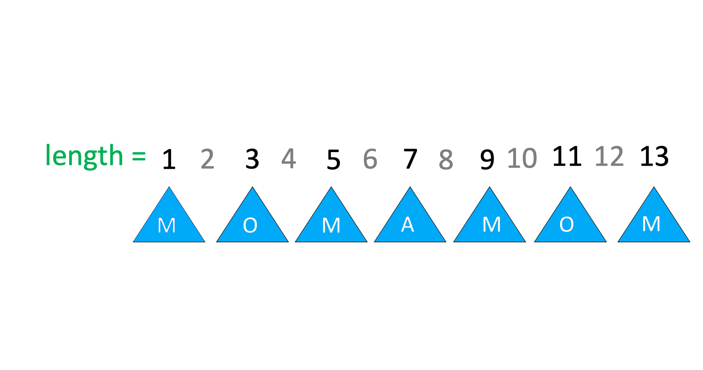

Manacher's Algorithm finds the longest palindromic substring in O(N) time compared to O(N2) time in dynamic programming. The way it reduces the number of operations performed is by doing some extra analysis when two halves of a center are equal.
Like in dynamic programming, Manacher's Algorithm also uses a center variable for the array with the palindrome to determine whether elements are the same on both sides of it, but it does not iterate the center variable for each element in the array. When the left half is equal to the right half of a center, the right half is said to be the "mirror" of the left. Now the center of the left half is found and the palindrome length of the newly found center is duplicated as the palindrome length of the corresponding center on the right half. The rest of the palindrome lengths for when the center is each of the remaining elements on the left half is duplicated over to the corresponding elements on the right half.
However, this is only true when the length of the mirror (the length of the palindrome at an index) is within the left boundary.
If the length of the mirror goes beyond the left boundary (say the left half is "MOMO" and the right half is "MOM"), then the palindrome lengths at each center on the right half would be equal to the right boundary - that center's index. The center's index treats the empty spaces between each element like their own index. Therefore, these two techniques reduce the amount of expansions needed in finding the longest palindromic substring, thus reducing time complexity, and giving us Manacher's Algorithm.
It uses utility classes for typography and spacing to space content out within the larger container.